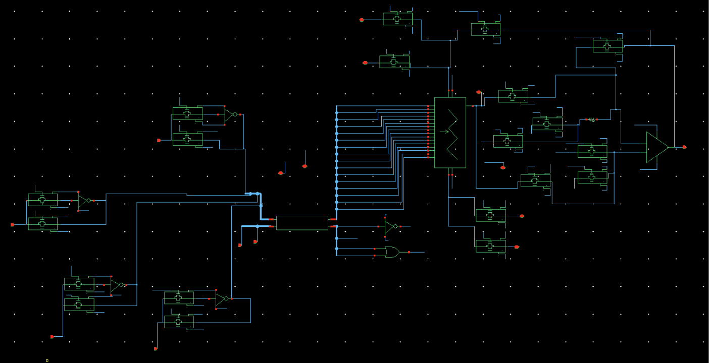
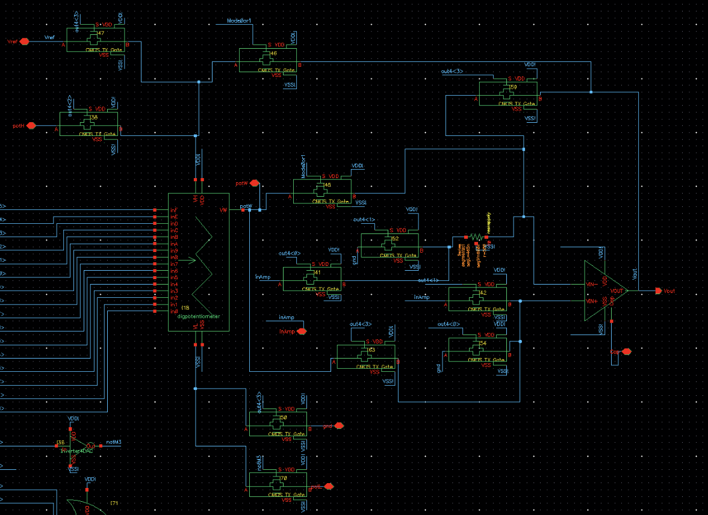
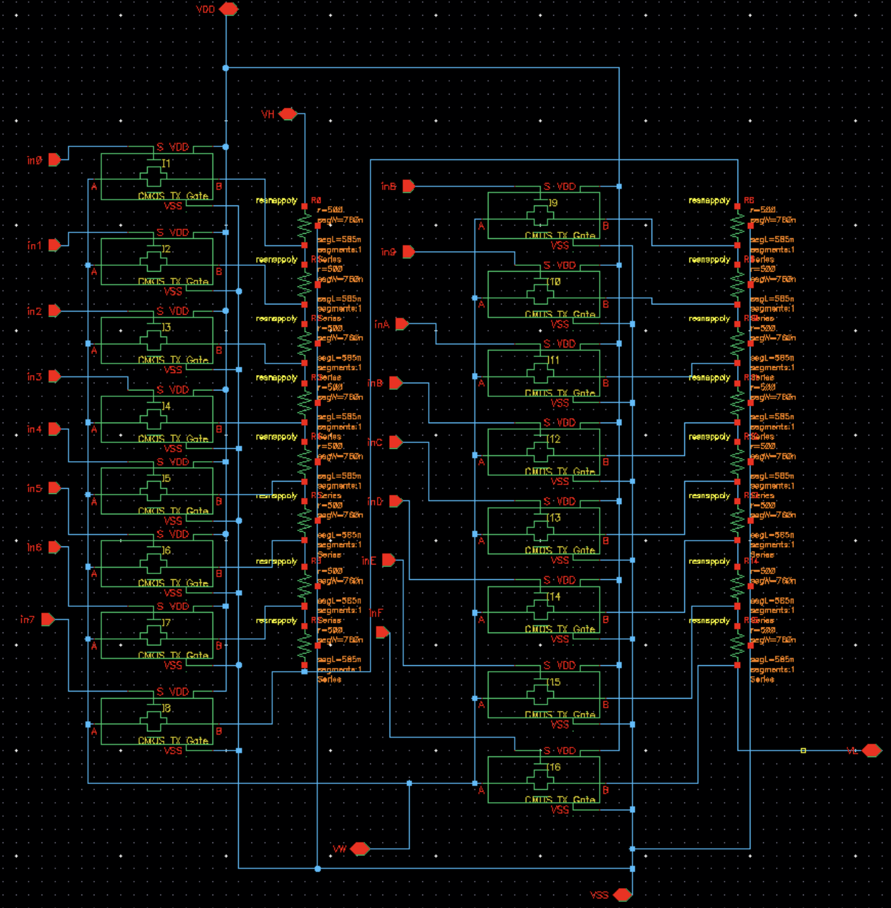
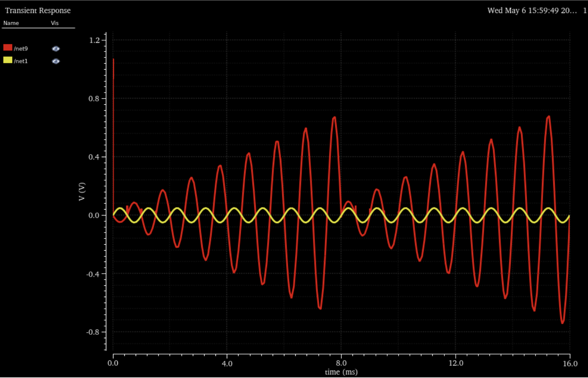
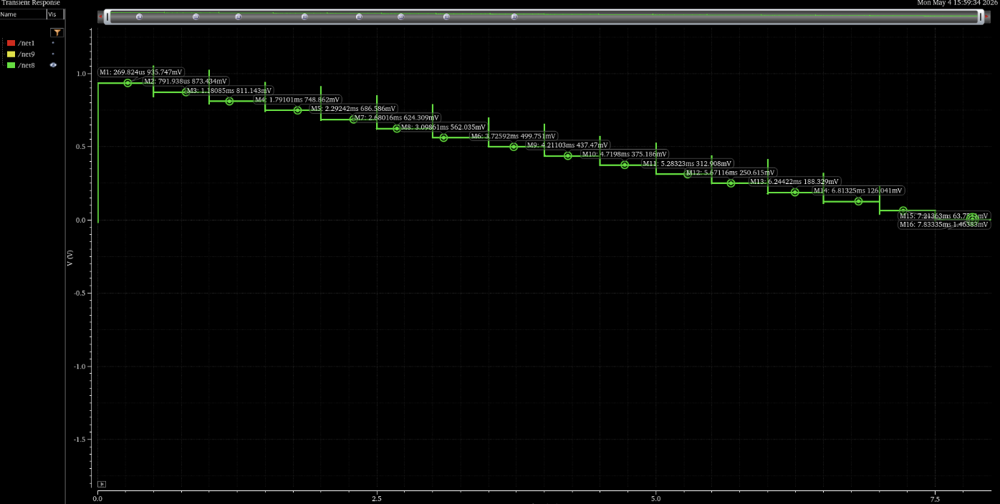
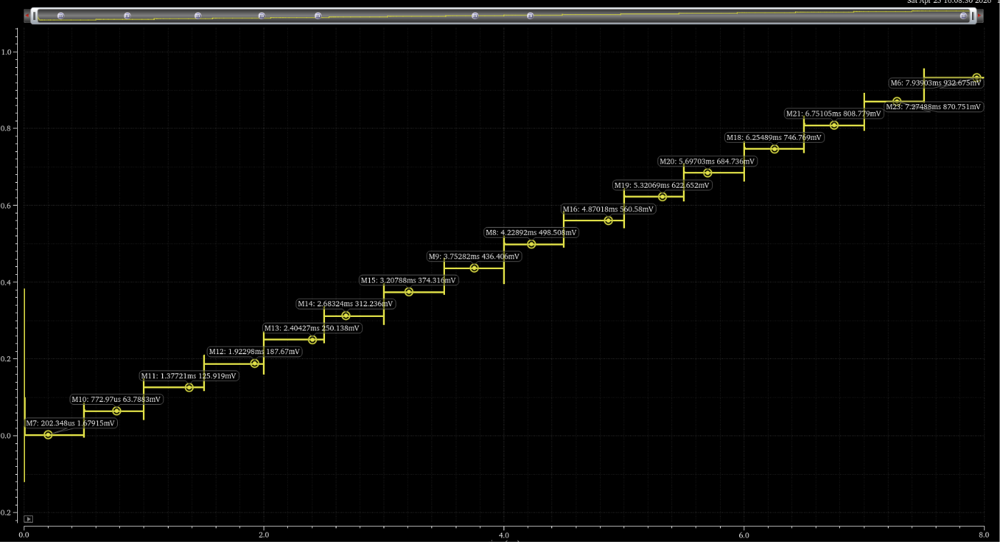
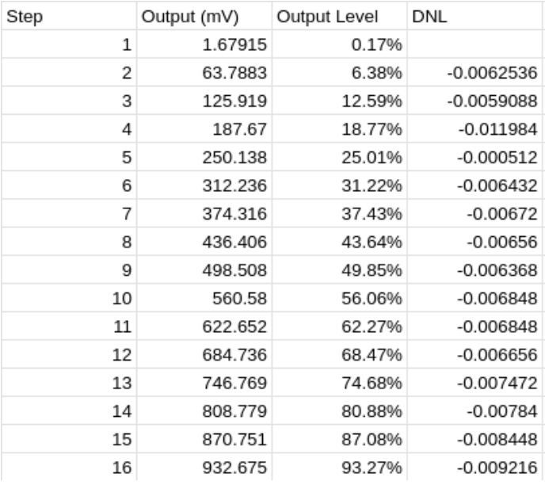

| Portfolio Home |
A multi-mode mixed-signal IC designed in the GPDK045 CMOS process using Cadence Virtuoso. The design uses shared analog circuitry that can be reconfigured as a programmable inverting amplifier, programmable non-inverting amplifier, 16-tap digital potentiometer, or 4-bit buffered DAC.
The programmable resistor network serves as the feedback network for the amplifier configurations, controlling the available gain settings, and can also be reconfigured as the resistor string for the DAC. A 2-to-4 digital decoder controls the operating mode.
Top-level hierarchical schematic showing the shared analog circuitry, programmable resistor network, and selectable operating modes.

Top-level hierarchical schematic of the programmable analog IC.
The shared analog circuitry contains the op-amp and associated signal paths used by the amplifier configurations. The programmable feedback network determines the selected gain.

Shared analog circuitry and op-amp used in the programmable amplifier configurations.
The transmission-gate-controlled resistor network provides 16 selectable feedback settings for the amplifier and can be reconfigured as the resistor string for the 4-bit buffered DAC.

Programmable resistor network and transmission-gate array.
The operating modes are selected using a 2-to-4 decoder implemented in Verilog. From there, the gain, potentiometer, and DAC are controlled by a 4-to-16 decoder.
module two4decoder(out, in);
input [1:0] in;
output [3:0] out;
assign out[0] = (~in[1]) & (~in[0]);
assign out[1] = (~in[1]) & (in[0]);
assign out[2] = (in[1]) & (~in[0]);
assign out[3] = (in[1]) & (in[0]);
endmodule
Verilog implementation of the 2-to-4 mode-selection decoder.
module projDecoder(out16, out4, in4, in2);
input [1:0] in2;
input [3:0] in4;
output [3:0] out4;
output [15:0] out16;
assign out4[0] = (~in2[1]) & (~in2[0]);
assign out4[1] = (~in2[1]) & (in2[0]);
assign out4[2] = (in2[1]) & (~in2[0]);
assign out4[3] = (in2[1]) & (in2[0]);
assign out16[0] = (~in4[3]) & (~in4[2]) & (~in4[1]) & (~in4[0]);
assign out16[1] = (~in4[3]) & (~in4[2]) & (~in4[1]) & (in4[0]);
assign out16[2] = (~in4[3]) & (~in4[2]) & (in4[1]) & (~in4[0]);
assign out16[3] = (~in4[3]) & (~in4[2]) & (in4[1]) & (in4[0]);
assign out16[4] = (~in4[3]) & (in4[2]) & (~in4[1]) & (~in4[0]);
assign out16[5] = (~in4[3]) & (in4[2]) & (~in4[1]) & (in4[0]);
assign out16[6] = (~in4[3]) & (in4[2]) & in4[1] & (~in4[0]);
assign out16[7] = (~in4[3]) & (in4[2]) & in4[1] & in4[0];
assign out16[8] = (in4[3]) & (~in4[2]) & (~in4[1]) & (~in4[0]);
assign out16[9] = (in4[3]) & (~in4[2]) & (~in4[1]) & in4[0];
assign out16[10] = (in4[3]) & (~in4[2]) & in4[1] & (~in4[0]);
assign out16[11] = (in4[3]) & (~in4[2]) & in4[1] & in4[0];
assign out16[12] = (in4[3]) & (in4[2]) & (~in4[1]) & (~in4[0]);
assign out16[13] = (in4[3]) & (in4[2]) & (~in4[1]) & in4[0];
assign out16[14] = (in4[3]) & (in4[2]) & in4[1] & (~in4[0]);
assign out16[15] = (in4[3]) & (in4[2]) & in4[1] & in4[0];
endmodule
Verilog implementation of the 4-to-16 gain-selection decoder.
Each operating mode was simulated independently in Cadence ADE Assembler to verify its functionality and performance.

Inverting (Left half) and Non-inverting (Right half) amplifier mode simulations

Simulation of the 16-tap digital potentiometer.

Simulation of the 4-bit buffered DAC.

Measured DAC output levels and differential nonlinearity.
Tools: Cadence Virtuoso, ADE Assembler, GPDK045, Genus, Innovus
Skills: Transistor-level CMOS design, analog circuit design, feedback, transmission gates, mixed-signal integration, IC layout, and circuit verification.
EE Portfolio • Department of Electrical and Computer Engineering • Iowa State University